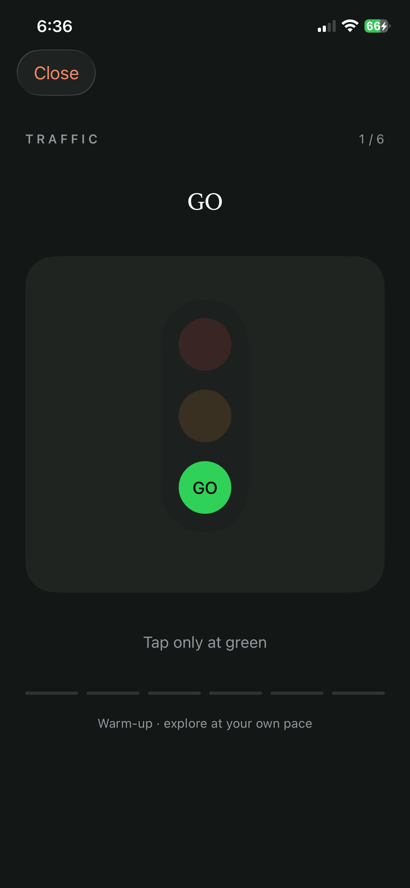
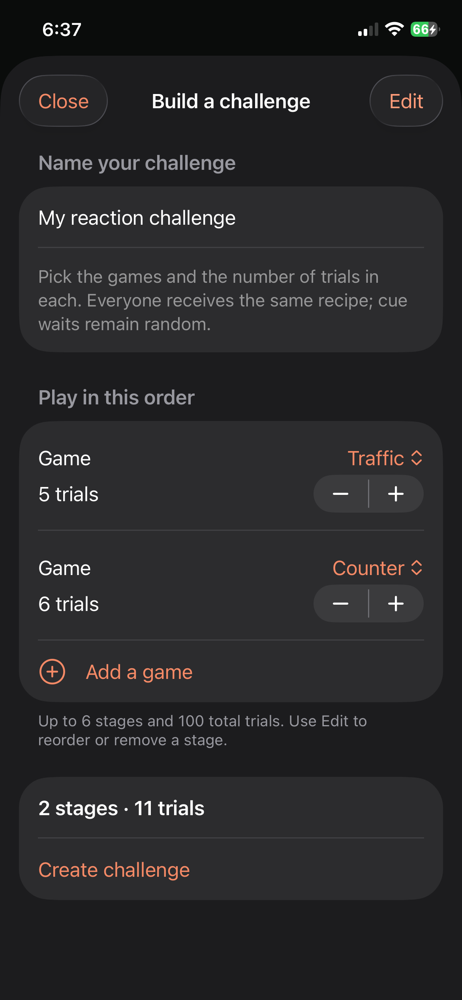

Wait for green
Traffic starts with a familiar signal. Wait through red and amber, then tap when green and GO appear. Early taps count as false starts.
Reaction games for iPhone
A signal. A choice. A tap.
Explore the small space between noticing and responding.
Original games. Short sessions. Your own pace.

Thirteen ways to begin
Traffic starts with a familiar signal. Wait through red and amber, then tap when green and GO appear. Early taps count as false starts.
Follow directions, resist the wrong cue and adapt when the rule changes. Each game keeps its own results.
Try a six-trial warm-up or a 20-trial standard test. Review your response times, mistakes and consistency across sessions.
Make it yours
Build one challenge from different games and trial counts. Share the recipe. Let your friends take a turn.
Plus members can create up to six stages. Friends join the included games for free. Compare on one iPhone or share result summaries; invitations do not automatically synchronize scores between devices.
How challenge sharing works
Room to explore
Traffic, Signal, Fork, daily circuits, basic history and joining friend challenges. Ads may appear after completed sessions, never during a timed trial.
All 13 solo games, custom challenge creation, advanced comparisons and no ads. Monthly and lifetime plans include the same benefits.
Choose a monthly subscription or a one-time lifetime purchase when available. The App Store shows your local price. Restore eligible purchases with your Apple Account.
Interval measures timing on your device. Display, touch and audio latency affect results. It is a game and practice tool, not a medical assessment or a driving-fitness test, and does not promise improved performance outside the app.